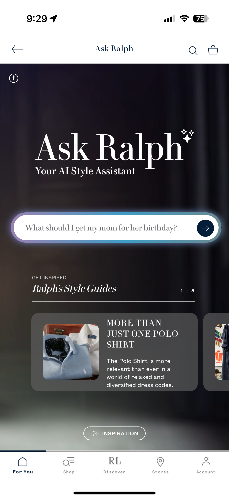

Ralph Lauren’s New AI Shopping Assistant

Context
First, what is conversational AI? Conversational AI is a branch of AI that allows machines to understand, process, and respond to human language in a natural and more conversational way. You’ve likely encountered it in the form of customer support chatbots on websites and virtual assistants like Siri or Alexa.
From my perspective as a user, this field of conversational AI has expanded dramatically within the last few years – especially within industries that you wouldn’t expect. For example, smart TV platforms are now experimenting with conversational interfaces to make voice search and content discovery more intuitive. Instead of typing or clicking through menus, you can simply ask, “What’s a good action movie?” and get personalized recommendations. Spotify recently released a feature that allows users to talk to the AI DJ and ask it something like “play something upbeat for a morning run.”
As I’ll explore in this blog, conversational AI is now making its way into retail and is becoming a pathway to more immersive and engaging digital shopping experiences. Ralph Lauren recently announced their “Ask Ralph” feature in collaboration with Microsoft Azure OpenAI, and in the sections below, I document my experience playing around with this new feature!
The cold start interface
When you first open “Ask Ralph,” this is what the interface looks like. I think it’s pretty great – it has recommendations for what to search (“What should I get my mom for her birthday?” along with style guide and even an “Inspiration” button at the bottom. With conversational AI, I think these cold start interfaces are especially important – they should provide visual/textual clues to the users guiding them toward what they can do.

Testing guardrails
When developing a conversational AI tool, implementing guardrails is extremely important. Users could ask or say anything they want, but Ask Ralph should narrow the scope of valid questions down to ones that are related to the customer shopping experience. Before deploying this feature, I’m guessing that the product/engineering team did extensive testing regarding when the model should respond and when it could not.
I was curious what the bounds of these guardrails were, so I tried asking it some “inappropriate” questions.

In general, the model always gave this generic “I’m sorry, but I can’t assist with that further” response. The only prompt unrelated to clothing where I got a response was when I asked “who founded ralph lauren.”
There was also some nuance to how the questions were phrased – although it refused to answer “why is this so expensive,” it answered “why is it $500.” I’m guessing that it could detect the negative sentiment of “expensive” and the guardrails kicked in, whereas stating the price is more neutral and objective.
Memory
Another thing I was curious about is if Ask Ralph had memory. For example, if I first asked it “show me a pair of pants” and then followed up in a separate message “how much is it,” would the model know that “it” is referring to the sweater it just showed me?
I tested this by asking it very explicitly: “what was the last question I asked.” It returned with the last valid question I asked, ignoring the questions that producted an “I’m sorry, but I can’t assist with that further” response. I thought this was interesting – possibly showing that the model is not learning based on these “inappropriate” queries.
Intended use cases
Finally, let’s get to the type of queries that Ask Ralph was designed for. Here, I asked it for a random item. It followed up trying to ask for more specific information (women’s, what type of clothing, etc.). I repeated that I just wanted a random item after selecting “women,” and this was the output:
It returns a clickable entity – when you click on the image of the product, I expected it to re-direct me to the normal product page (where you can see reviews, price, add to cart, and so on). Instead, it automatically sends a new query for “show me details for the [product].” Looking back on this interaction, this is most likely a strategic move to keep users within the Ask Ralph product, encouraging more follow-up queries and conversations.
Overall impressions
Overall, I had a pretty great experience interacting with Ask Ralph. The highlight of my experience comes from a UI perspective – compared to other conversational AI interfaces (like ChatGPT), I feel like Microsoft Copilot has done a great job incorporating visual cues and more interesting elements on that cold-start interface. Since Ask Ralph was built using Copilot, I can see those UI elements coming through. The experience feels premium, polished, and immersive!